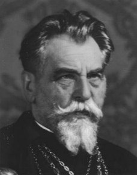
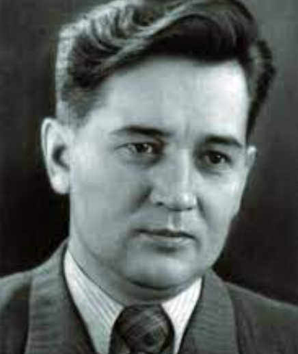
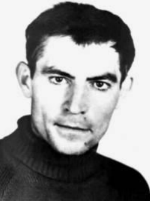
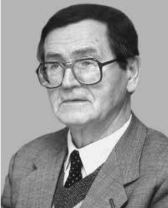
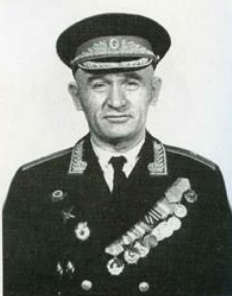
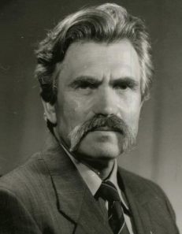
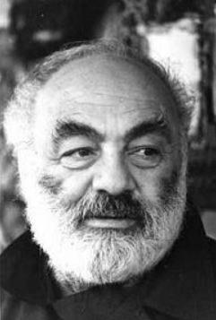
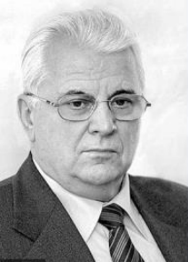

Йосиф Сліпий
У листопаді 1944р став главою греко-католицької
церкви. Після вісімнадцяти років каторги звільнений
у 1963р.

Олесь Гончар
Український прозаїк, найвідоміші твори «Прапороносці», «Тронка», «Людина і
зброя». У 1968р. виходить його роман «Собор».

Василь Стус
Один з учасників акції протесту у вересні 1965р в кінотеатрі «Україна» в
Києві. У 1970р за кордоном вийшла його збірка поезій «Зимові дерева».

Василь Симоненко
Поет-шістдесятник, дебютував збіркою «Тиша і грім». Його творчість порівнювали за
глибиною страждання та щирості з поезією Т.Шевченка

В’ячеслав Чорновіл
У 1967р. підготував збірку «Лихо з розуму», яку відзначено премією
міжнародної журналістики. Загинув в автокатастрофі у березні 1999р.

Іван Дзюба
Автор книги «Інтернаціоналізм чи русифікація» (1965р.). За відкриті виступи на захист
української інтелігенції, самвидавські матеріали був ув’язнений у 1972р

Петро Григоренко
Учасник Української громадської групи сприяння
виконання Гельсінських угод (УГГ, 1976р.). Генерал-майор, активний учасник дисидентського руху

Іван Миколайчук
Український кіноактор, кінорежисер, сценарист. Провідні ролі у фільмах «Тіні
забутих предків» (реж. С. Параджанов), «Пропала грамота» (реж. Б. Івченко)

Левко Лук’яненко
Навчався на юридичному факультеті Московського державного університету. Засуджений до смертної кари,
згодом заміненої на ув’язнення.

Сергій Параджанов
Вірменський та український кінорежисер. Один із засновників українського
поетичного кіно. Екранізація п’єси М.Коцюбинського «Тіні забутих предків», принесла йому
всесвітню славу.

Леонід Кравчук
У 1990-1991рр голова Верховної Ради України. 1991 – 1994рр. перший Президент
незалежної України.